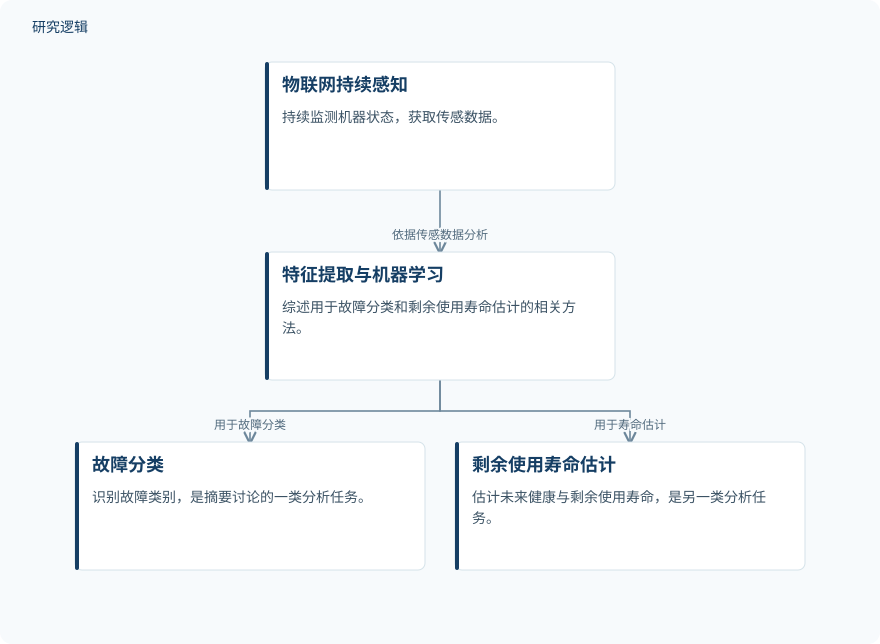

摘要解读
基于物联网与机器学习的机器健康监测及预测性维护综述：架构、算法与开放挑战
A Review of IoT-Based Machine Health Monitoring and Predictive Maintenance Using Machine Learning: Architectures, Algorithms, and Open Challenges
解读更新 2026-11-10 11:22 · 依据公开摘要整理，未核验全文细节
设备维护如何从“坏了再修”或“到期就换”，转向依据实际状态判断风险？这篇综述串联工业物联网、机器学习与预测性维护，阅读价值在于理解从传感数据到故障识别、寿命估计的整体关系，以及当前仍未解决的落地问题。
文章目录
维护时机：故障之后，还是更早判断？
非计划设备故障会影响制造业的生产效率、安全与运行成本。摘要指出，被动维修可能让设备一直运行到失效，而按时间安排的预防性维护又可能过早更换健康部件；两者都未充分利用工业设备持续产生的数据。
工业物联网与机器学习为预测性维护提供了另一种选择：持续监测机器状态，并依据传感数据估计未来健康状况。本文关注的是这一领域的架构、算法与共性挑战，而非报告一套新系统的完整验证结果。
沿着传感到云端，梳理诊断与寿命估计
根据摘要，作者考察了从传感层到云端的分层架构，梳理用于故障分类和剩余使用寿命估计的特征提取与学习方法，并比较代表性研究。涉及的方法包括支持向量机、集成方法、深度网络、图像诊断和生存分析。
这是一项综述性的整理与比较。摘要没有交代文献检索、筛选与质量评价流程，因此目前只能确认其讨论范围，不能据此判断综述是否系统覆盖了相关研究。
依据摘要整理的感知与分析任务示意


仅概括摘要所述传感数据、特征提取与学习任务之间的关系，不代表论文原图或已经验证的集成系统。
下载 SVG图示关系说明
实线表示相邻阶段的信息流，虚线表示跨阶段联系或反馈。
物联网持续感知 → 特征提取与机器学习：依据传感数据分析；特征提取与机器学习 → 故障分类：用于故障分类；特征提取与机器学习 → 剩余使用寿命估计：用于寿命估计
性能数字之外，更值得关注任务割裂
摘要汇总的既有研究中，单分类器故障检测的准确率约为88%，视觉齿轮箱诊断的准确率为96%；生存模型在真实工业数据上的一致性指数超过0.97。这些数字来自不同研究与任务，不能直接当作同一基准下的算法排名，也不是本文新系统的实测成绩。
作者归纳的反复出现的问题包括：过度依赖单一算法与平衡基准数据集，故障分类与寿命估计彼此割裂，以及生存分析在工业4.0场景中的应用有限。边缘部署、安全性和可解释性也仍有待解决。
在此基础上，作者提出将实时物联网感知与分类、预后分析相结合的整合方向。这是研究方向，而非摘要已报告完成验证的成果。
摘要不足以判断工业泛化与比较公平性
当前解读仅依据所提供的完整摘要。摘要未说明各研究的样本规模、设备覆盖、数据划分、类别分布及验证范围，也未给出统一比较条件和不确定性信息。因此，无法判断这些指标能否跨设备、跨工况复现，或不同方法的比较是否公平；这不代表原论文未讨论这些内容。
阅读启发：分类结果如何连接寿命判断？
阅读启发：进一步阅读时，可以围绕“故障分类与寿命估计如何衔接”检查具体文献：两类任务是否使用相互关联的信息，生存分析提供了怎样的寿命描述，以及边缘部署、安全性与可解释性如何被评价。相比只关注最高准确率，这些问题更有助于理解预测性维护的适用边界。
以上为本站阅读启发与建议，不是论文已验证的结论。